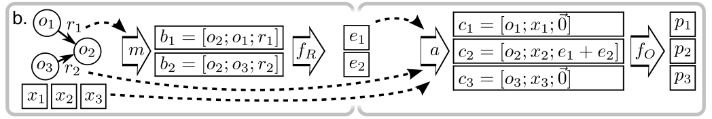
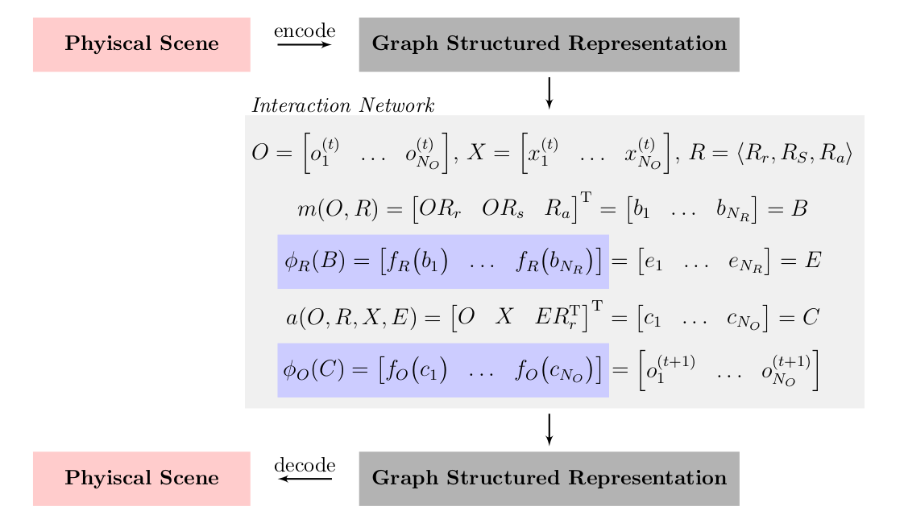

Battaglia et al. (2016) introduce the Interaction Network (IN) as the first general-purpose learnable physics engine capable of zero-shot generalization in terms of varying configurations of objects and relations. The IN leverages object- and relation-based reasoning by defining a message passing scheme on a graph-structured representation of objects as nodes and relations as edges. As a proof of concept, they show that their model successfully learned to predict physical trajectories in gravitational systems, bouncing ball domains and mass string systems, and that it could also learn to estimate abstract properties such as the potential energy. Although its formulation is based on dynamical physical systems, it might also be applicable to other domains that can be abstracted into a graph-structured representation of objects and relations such as model-based reinforcment learning.
Model Description
In essence, the IN model can be understood as a graph-based simulator (i.e., state is represented as a graph) that predicts a future state (i.e., altered graph) using a message-passing scheme. Battaglia et al. (2016) used a handcrafted scene encoder/decoder to convert the physical scene into the corresponding graph structure and vice versa.
Definition: Let \(G=\langle O, R \rangle\) be an attributed, directed multigraph in which the set of nodes \(O=\\{o_j\\}_{j=1 \dots N_O}\) represents objects and the set of edges \(R = \\{ \langle i, j , r_k \rangle_k \\}\_{1 \dots N_R}\) represents the relations between the objects, i.e., the triplet \(\langle i,j, r_k \rangle_k\) defines the \(k^{\text{th}}\) relation from sender \(o_i\) to receiver \(o_j\) with relation attribute \(r_k\). Each object \(o_i\) may have several attributes1, an object state \(o_i^{(t)}\) at time \(t\) can be understood as a value assignment to all of its attributes. Additionally, let \(X=\\{ x_j \\}\_{1 \dots N_O}\) denote external effects (e.g., active control or gravitation) which are applied to each object separately.
Intuition: The ultimate goal of the IN is to predict all future object states \(o_i^{(t+1)}\) based on the graph \(G\), the current external effects per object \(x_i^{(t)}\) and all current object states \(o_i^{(t)}\). A message passing scheme is defined to achieve this goal in which first effects resulting from interactions are computed (relational reasoning), then these effects (messages) together with the external effects are aggregated towards the objects, lastly the aggregated information is used to update the object states (object reasoning).
Formally, the basic IN is defined as follows
\[ \begin{align} &\text{IN}(G) = \phi_O \Bigg( a\Big( G, X, \phi_R \big( m (G)\big) \Big)\Bigg) \end{align} \]
\[ \begin{align} \begin{aligned} & m(G) = B = \{ b_k\}_{k=1\dots N_R} \\ & f_{R} (b_k) = e_k \\ & \phi_{R} (B) = E = \{e_k\}_{k=1 \dots N_R} \end{aligned} && \begin{aligned} & a(G, X, E) = C = \{c_j\}_{j=1\dots N_O} \\ & f_O (c_j) = p_j \\ & \phi_O (C) = P = \{p_j\}_{j=1\dots N_o} \end{aligned} \end{align} \]
In this definition \(m\) denotes the marshalling function which rearranges objects and relations into interaction terms \(b_k= \langle o_i, o_j, r_k \rangle \in B\) on which the relational function \(\phi_R\) can operate (element-wise by applying \(f_R\) on each interaction term) to predict the effects of each interaction \(e_k\in E\). The aggregation function \(a\) builds a a set of of object model inputs \(c_j \in C\) (one per object) by collecting and merging all incoming effects per object and combining the result with the object state \(o_{j}^{(t)}\) and the external effects for that object \(x_j^{(t)}\). Lastly, the object model \(\phi_O\) predicts for all objects their result \(p_j\in P\), i.e., future object states \(o_{j}^{(t+1)}\), by applying \(f_O\) to each \(c_j\). The figure below represents the described procedure of an (exemplary) IN.
|  |
|---|
| Schematic of the IN’s update procedure for an exemplary IN2: Firstly, the marshalling function \(m\) rearranges objects \(o_i\) based on the relations \(r_j\) into interaction terms \(b_k = \langle o_i, o_j, r_k \rangle\). Secondly, the function \(f_R\) is applied on each interaction term to compute the corresponding (directed) effects. Thirdly, the aggregation function \(a\) uses the graph structure to collect and merge the incoming effects, and to add the corresponding object state and external effects into a new object term \(c_k = \langle o_k, x_k, \hat{e}_k \rangle\) (\(\hat{e}_k\) denotes aggregated effect). Lastly, this representation is used to predict the results \(p_k\), i.e., future object states, by applying \(f_O\) to each \(c_k\). |
Intuition: Computing the trajectories of planets in a solar system may be a good example to motivate and understand the IN definition. Objects in the graph shall be the planets and relations the pairwise gravitational forces on each other, i.e., each object has an arrow pointing to all other objects. Object attributes could be the mass, acceleration, velocity and position. As external effects we could define the step size (necessary for approximate integration). Relational attributes are not needed then. The physics approach to compute the approximated trajacetories would be to first compute all gravitational forces per object which corresponds to computing the effects in the IN. Then, the net force would be computed as the sum of all forces per object, i.e., aggregation in the IN. Lastly, the object attributes would be updated (except mass) using the calculated net force, current object state and step size which corresponds to the object-centric update in the IN.
Learning the Model
In the IN defintion, there are no limitations whatsoever for the functions and how they operate over their inputs (e.g., objects itself could also be graphs). Thus, learning the underlying dynamics given the graph structured representation and the scene encoder/decoder (and assuming that there is some IN that can simulate the dynamics) without further assumptions remains an intractable quest. To overcome this problem, Battaglia et al. (2016) present a learnable implementation of the IN which uses deep neural networks as function approximators and a specific object and relation representation using matrices. Then, learning the model comes down to training from data using the standard deep learning framework.
Implementation: Let each object \(o_i^{(t)}\in \mathbb{R}^{D_s}\) be represented by a \(D_s\)-dimensional vector where each entry corresponds to an attribute, i.e., attributes have a predefined order which is fix over all objects. Then, \(O\) is defined as a \(D_S \times N_O\) matrix where each column represents an object. Similarly, \(X\) is defined as a \(D_X \times N_O\) matrix where each \(D_x\)-dimensional column represents the external effects that correspond to the object defined in the same column of \(O\). Let each relation be formalized into a triple of three vectors \(r_k = \langle r_r, r_s, r_a \rangle\) where \(r_a \in \mathbb{R}^{D_R}\) represents the (ordered) relational attributes and \(r_r, r_s \in \{0, 1\}^{N_O}\) are one-hot encodings of the receiver and sender object, respectively. Then, all relations can be represented by the triplet \(R = \langle R_r, R_s, R_a \rangle\) where the matrices \(R_r, R_s \in \{0,1\}^{N_O \times N_R}\) and \(R_a \in \mathbb{R}^{D_R \times N_R}\) are generated by stacking the relations column-wise.
It follows that the interaction terms \(b_k\) can be vectorized by concatenation of the receiver and sender object attributes and the relational attributes into a \((2 D_s + D_R)\)-length vector. The marshalling function \(m\) can be stated as follows
\[ \begin{align} m(G) = \begin{bmatrix} O R_r \\ O R_s \\ R_a \end{bmatrix} = \begin{bmatrix} b_1 & \dots & b_{N_R} \end{bmatrix} = B. \end{align} \]
\(B\) is the input to the relational model \(\phi_R\) which is defined through the application of \(f_R\) on each column of \(B\) (each interaction term), i.e.,
\[ \begin{align} \phi_R (B) = \begin{bmatrix} f_R \big(b_1\big) & \dots & f_R \big(b_{N_R}\big) \end{bmatrix} = \begin{bmatrix} e_1 & \dots e_{N_R}\end{bmatrix} = E. \end{align} \]
\(f_R\) shall be approximated by a neural network to estimate a \(D_E\)-length vector \(e_k\) that encodes the resulting effect. Similar to the marshalling function, the aggregation function \(a\) constructs vectorized object terms \(c_k = \begin{bmatrix} o_k^{(t)} & x_k^{(t)} & \hat{e}_k^{(t)} \end{bmatrix}^{\text{T}}\) by concatenation of the object attributes, the external effects and the aggregated effect (summation of all incoming effects per object):
\[ \begin{align} a(O, R, X, E) = \begin{bmatrix} O & X & E R_r^{\text{T}} \end{bmatrix}^{\text{T}} = \begin{bmatrix} c_1 & \dots & c_{N_O} \end{bmatrix} = C. \end{align} \]
Lastly, \(C\) is used as the input to the object model \(\phi_O\) which is defined through the application of \(f_O\) on each column of \(C\), i.e.,
\[ \phi_O (C) = \begin{bmatrix} f_O \big( c_1 \big) & \dots & f_O \big( c_{N_O} \big) \end{bmatrix}= \begin{bmatrix} o_1^{(t+1)} & \dots & o_{N_O}^{(t+1)} \end{bmatrix}. \]
The result can be used to update the graph structured representation. The figure below summarizes the implementation of the IN.
|  |
|---|
| One step roll out of the IN implementation. The physical scene is encoded (decoded) into (from) a graph structured representation using a handcrafted scene encoder (decoder). Battaglia et al. (2016) present a learnable implementation by using neural networks (blue boxes) as function approximators for the relational model (\(\phi_R\)) and the object model (\(\phi_O\)). |
Drawbacks of Paper
- handcrafted scene encoder/decoder \(\Rightarrow\) not end-to-end
- object states could blow up since all objects share the same attributes
Footnotes
In their implementation, Battaglia et al. (2016) assume that all objects share the same attributes, i.e., are instances from the same class. 2: Schematic is taken from the original paper of Battaglia et al. (2016).↩︎